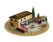
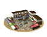
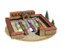

Imperium
Imperium Herb gatherer (Urban) chain
3 levels, each replacing the one before it — you upgrade in place rather than building alongside.
Herb gatherer (Urban) → Perfume Maker (Urban) → Medicine and Perfume Export (Urban)
Pictures are the game's own building art. Where a culture ships none of its own, the game falls back to another culture's, and that is what is shown here.
Levels at a glance
| Level | Cost | Build time | Minimum settlement | Upgrades to | Level | Cost | Build time | Minimum settlement | Upgrades to | ||
|---|---|---|---|---|---|---|---|---|---|---|---|
 | Herb gatherer (Urban) | 1,000 | 2 | large town | Perfume Maker (Urban) |  | Perfume Maker (Urban) | 3,500 | 4 | city | Medicine and Perfume Export (Urban) |
 | Medicine and Perfume Export (Urban) | 7,000 | 6 | large city | — |
Costs in denarii, build time in turns.
Herb gatherer (Urban)

The game ships no picture of its own for this level and shows the Local Barter picture instead.
Where nature’s first-aid kit is gathered and prepared, and someone’s probably about to feel better.
Welcome to the ancient version of a “natural pharmacy.”
Here, herdsmen and specialist herbalists can sell the special herbs they encounter in the wild, often having to venture to the most inconvenient mountain tops and ledges to get at the most valuable plants. The herdsmen have it doubly though as they need to find the plant before their flock does as many of them are quite tasty as well. Once here the finest herbs are carefully plucked and expertly prepared by skilled hands that know the difference between a healing plant and something that will leave you in bed for a week.
Whether it's for a sore throat, a nasty fever, or just a “bad day” after battle, these leaves, roots, and flowers are the ancient world’s answer to every ache, pain, and broken heart (though not necessarily in that order).
| Cost | 1,000 denarii | Build time | 2 turns | Minimum settlement | large town |
| Upgrades to | Perfume Maker (Urban) |
What it does
- +1 population health
Perfume Maker (Urban)

The game ships no picture of its own for this level and shows the Local Market picture instead.
Where luxury meets medicine, and you leave smelling like a god (hopefully not a sweaty one).
The perfume maker is a true artist, blending fragrant oils and exotic flowers to create scents that make the gods jealous. But these aren't just for smelling good at parties.
These scents are also thought to ward off sickness (because who wants a cold when you smell like a rose garden?).
Imported oils, exotic flowers, and maybe a dash of magic are mixed to create fragrances fit for the highest of nobles and most sophisticated of underlings.
If you like smelling rich and fancy (or just want to mask the smell of city life), this is your spot.
| Cost | 3,500 denarii | Build time | 4 turns | Minimum settlement | city |
| Upgrades to | Medicine and Perfume Export (Urban) |
What it does
- +1 population health
- +2 trade income
Medicine and Perfume Export (Urban)

The game ships no picture of its own for this level and shows the Forum picture instead.
The source of good health and good smells.
In this extensive workshop both medicines and perfumes are produced from the herbs that are gathered from the hills as well as those that grown withing the courtyards. The scents that enrich this place will soon be available near you, at an extravangant price. While the most exclusive medicines using Silphium, Mastic, Hellebore, and Asafoetida are carefully prepared to be sold to the most expert healers of the empire.
| Cost | 7,000 denarii | Build time | 6 turns | Minimum settlement | large city |
What it does
- +2 population health
- +3 trade income